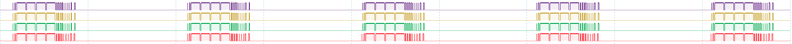

O3R System synchronization and triggering
System architecture
The O3R system is designed to able to handle timing precisely per system: one system is one VPU and up to 6 heads connected to it via their respective ports. All imagers (3D ToF sensor) / ports are triggered internally via a separate (internal) trigger control unit in all states. This ensures precise timing with greater accuracy than what can typically be achieved with a independent embedded distributed system (e.g. multiple ifm O3D cameras), which have to be triggered via trigger commands sent over a network.
The per system triggering can therefore be handled in either the RUN state or IDLE state.
For multiple systems (multiple VPUs) either software triggers have to be used to synchronize the systems. Or systems can be synchronized via NTP (network time protocol) if NTP timing accuracy is sufficient in RUN state.
O3R States and its effect on synchronization
The O3R system allows different states to suit different timing principles: it currently supports two state (relevant to timing / sync)
RUN state
IDLE state
(CONF state: used internally for boot-up procedure and reconfiguration)
(ERROR state: used internally )
O3R default state
The O3R system starts by default in CONF state for all connected camera heads. The targeted framerate is 10 Hz, offset is 0. Set the cameras to RUN state to start the data acquisition loop: this will produce data frames triggered at the same time for all connected cameras heads.
States
state |
comment |
|---|---|
RUN |
free running state: cameras run at the desired framerate, timed to the same time base |
IDLE |
state used for trigger: camera inactive until trigger signal received |
RUN state
This state is used as a free running state. Every camera in RUN state is running at the desired framerate (as set in the configuration).
Cameras (heads) can be timed relative towards each other per the systems internal timing control : the relevant parameter for setting this is the delay parameter.
IDLE state
This state is required for sending software triggers to the system per camera (head) or camera group. The cameras active illumination and imager are not active until a trigger command is sent via the API.
System configuration parameters
{...,
"ports": {
....,
"port2": {
"acquisition": {
"channelSelection": "manual",
"channelValue": 0,
"delay": 0,
"exposureLong": 5000,
"exposureShort": 400,
"framerate": 10.0,
"offset": 0.0,
"swTriggerGroup": 0,
"version": {
"major": 0,
"minor": 0,
"patch": 0
}
},
...
}
}
The O3R camera is designed to capture at 20fps regardless of any applied setting which means the minimum time span between two consecutive frames is 50 milliseconds (at 20 Hz). The synchronization allows to capture the scene at same framerate (i.e. frequency) for different cameras at the same time point.
With the O3R, different cameras can be synchronized to the same time base independent of their framerate: see Synchronization
Different camera heads can be triggered which are required to run at same framerate.
Synchronization / trigger relevant parameters:
parameter |
value |
description |
|---|---|---|
delay |
ms |
time offset to (internal) trigger of first envelope (group) |
framerate |
1/sec |
image framerate |
swTriggerGroup |
[0,6] |
software trigger group id / affiliation |
Synchronization
The different cameras having the same framerate will be always synchronized. The figure below shows the synchronization of four different cameras.
The different coloured horizontal signals resembles the signals received from four different cameras running at same frame rate.
The four cameras running at 10Hz Frequency

Camera 3(Yellow colored signal) is running at 12 Hz Frequency

Delay
Delay is the parameter that defines the minimum amount of time [in milliseconds] between the framerate loop and imager trigger. As we see in the below image, the second camera(green colored signal) is running at 10 fps with a delay of 10 ms.

Software Trigger Group
When different ports have the same value (>=1) for the parameter swTriggerGroup the cameras belonging to the same group are always synchronized and triggered when any one of the camera in a swTriggerGroup is triggered. By default the value of Software Trigger group is 0 which means that the port is triggered independently from all the other ports.
System latency and relevant variables
Typical overall sensor system latency is dependent on a number of variables:
internal system latency / jitter
jitter of the system when in free running state
delay before a software trigger is registered internally and propagated to the relevant camera head
external latency:
network latency when sending trigger signals
network latency when sending data via the network
data evaluation latency
dependent on the algorithm and evaluating hardware utilization
O3R timing repeatability
Testing thresholds for timing repeatability in RUN (free-running) state: These are benchmarks evaluated for prototype devices, and are therefore up to change. Updates will be added to this doc and it’s respective white paper as soon as they are available.
TH_FRAMERATE_JITTER = 1E-3 # sec
TH_FRAMERATE_ABS_DIFF = 3E-2 # sec
TH_DELAY_JITTER_MAX = 2E-3 # sec
TH_DELAY_TWO_CAMS_JITTER_DIFF = 2E-4 # sec
TH_DELAY_REPETEABILITY = 5E-4 # sec
TH_LONG_EXP_BOUNDARY = 0.05 # percent
LONG_EXP = 0.005 + 0.0006 # MAGIC NUMBER EXP time [sec] plus read-out
TH_ONE_ENVELOPE_JITTER = 1E-4 # sec
At ifm several use cases have been evaluated to find the relevant system thresholds for timing accuracy and jitter statistics:
Test case 1: framerate precision and jitter
Input values are envelope signals of one camera as recorded with a oscilloscope .
framerate = 1/np.nanmean(np.diff(time3Phase_b1)) # time3Phase_b1 is the oscilloscope data
framerate_std_dt = np.nanstd(np.diff(time3Phase_b1))
# assert envelope timing repeatability is high: < 1E-3 sec
# assert(long_std < 1E-3)
tv = framerate_std_dt
th = TH_FRAMERATE_JITTER
if (tv > th):
ERRORS.append("envelope timing repeatability failed: {framerate_std_dt:f}\n test value: {tv} - threshold: {th}".format(framerate_std_dt=framerate_std_dt, tv=tv, th=th))
# assert(abs(FRAMERATE - long_mean) < 2E-4 sec)
tv = abs(1/framerate_target - 1/framerate)
th = TH_FRAMERATE_ABS_DIFF
if (tv > th):
ERRORS.append("framerate abs check failed: {framerate}\n test value: {tv} - threshold: {th}".format(framerate=framerate, tv=tv, th=th))
Outcome:
per system / head jitter:
TH_FRAMERATE_JITTERis about1E-3 secper system / head framerate precision:
TH_FRAMERATE_JITTERis about2E-4 sec
additional test cases:
Additional test cases are tested ifm internally. They will be documented here in the future.